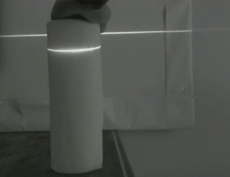
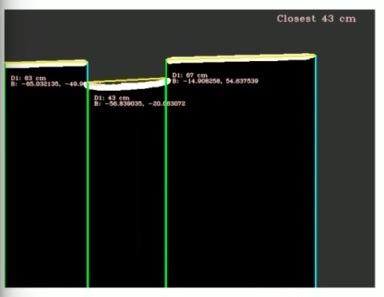

Portfolio.Underwater_Vision
| < | LIST |
> |
website;
edwin;
pseudOS;
pendulum;
desktop_companion;
wall-e;
underwater_vision;
jimmy;
genetic_car;
> ./intro
(Apologies for the bad recording quality, as a freshman I didn't really know what good documentation meant. Full-screen for the best effect!)
download source code
> ./stats
Status: Completed Aug/2014
Languages: C++
Software: OpenCV
Hardware: Horizontal green laser, Webcam
Documentation: Complete
> ./documentation
Underwater localization was a project done for research over Summer 2014. The robotics lab was working on a robotic tuna, and one of the problems that the tuna faced was obstacle avoidance underwater. Because the majority of localization methods rely on some sort of camera or IR lidars that wouldn't be effective underwater, we decided to go with a green laser instead.
We used a simplified version of structured light, where the depth of the displacement determined the distance of the object from the camera. The script requires an initial camera calibration, so it's flexible for multiple types of cameras and environment setups. Below is an example of the greyscale video output that a user sees when running the program.

Though it appears as if distance calculations are happening directly off the greyscale video feed, the structured light distance calculations can only occur after the image has been filtered several times.
The order of OpenCV operations is:
Raw Image -> Greyscale -> Sobel filter -> Gaussian blur -> Canny edge -> Contour detection
The Sobel filter uses a convolution kernel that increases the intensity of horizontal lines, while decreasing the intensity of verticle lines. The Canny edge detector then takes this image and highlights the edges further. The Contour detection operation then takes the highlighted edges and finds the most prominent ones to do distance calculations on. The multiple layers of filtering allow us to have a fairly clean line detection reading. An example of what this looks like:

However, to the robot, what's more important is where it can go versus where it can't go. To simplify the information further, I took the information outputted from the distance calculations and used it to fill out an occupancy grid. The X-axis is the number of degrees the object is from the center (0 degrees), while the Y-axis is the distance from the camera in centimeters.
 This method allows us to transport information about potential obstacles in a scene in a very compact manner over ROS. Since this was a project that I did back in freshman year, there are several places where the code can be optimized. However, I did basically teach myself C++ though this project, which is probably the thing I'm most proud about. :)
This method allows us to transport information about potential obstacles in a scene in a very compact manner over ROS. Since this was a project that I did back in freshman year, there are several places where the code can be optimized. However, I did basically teach myself C++ though this project, which is probably the thing I'm most proud about. :)
This method allows us to transport information about potential obstacles in a scene in a very compact manner over ROS. Since this was a project that I did back in freshman year, there are several places where the code can be optimized. However, I did basically teach myself C++ though this project, which is probably the thing I'm most proud about. :)
>
|